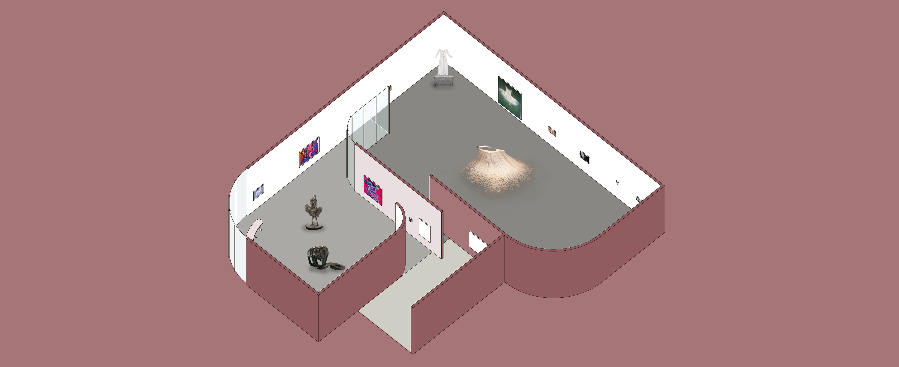
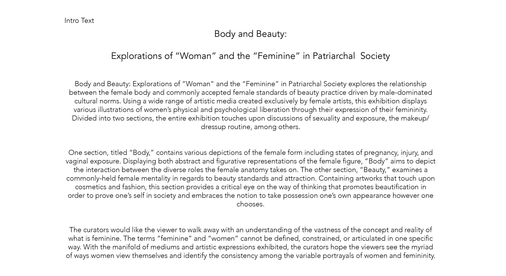
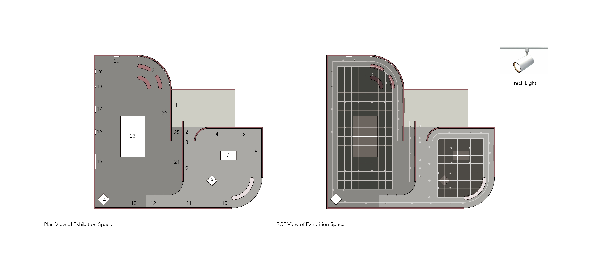
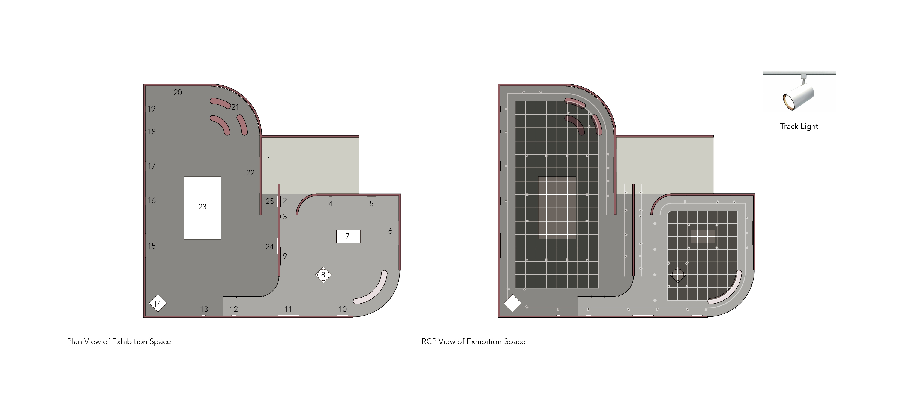
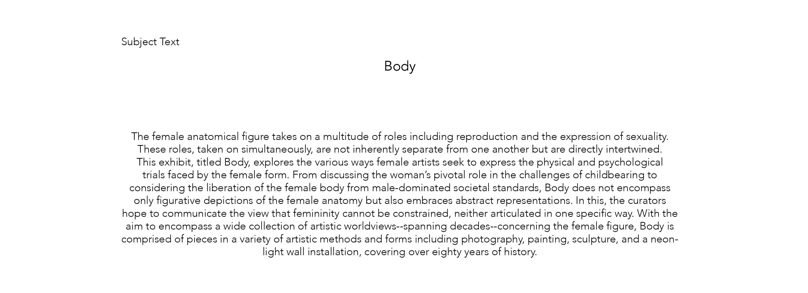
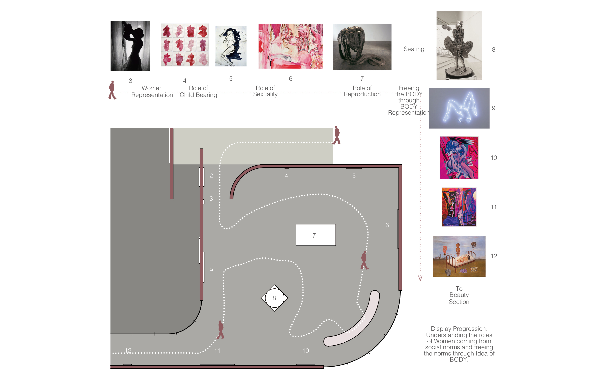
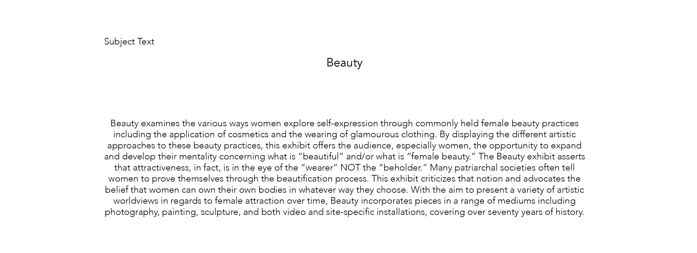
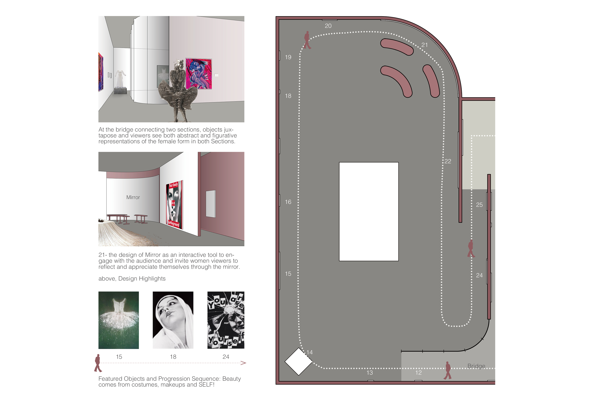
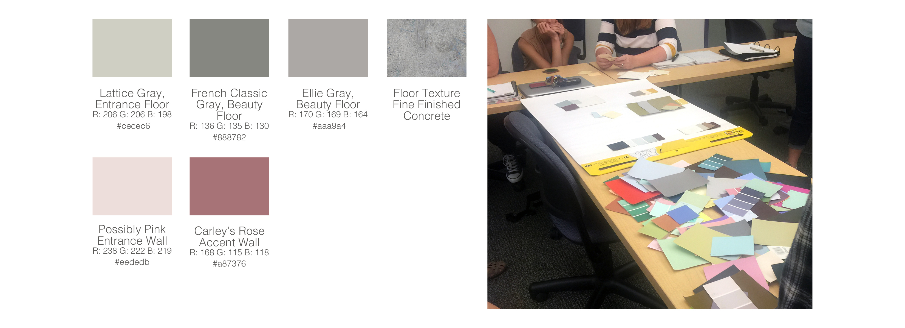

Body and Beauty
Explorations of “Woman” and the “Feminine” in Patriarchal Society
Arts Curating & Design Project

above, isometric view of exhibition space
The Project is to curate an exhibition of objects by starting with an argument “the Big Idea” and carefully selecting the artworks to support the argument, as well as designing a space in which to exhibit them and making a story to tell.


above, exhibition curatorial statement

above, exhibition plan and reflected ceiling plan

above, above, Body section subject label

above, blowup plan of Body section

above, Beauty section subject label

above, blowup of Beauty Section

above, color studies
Grays are used for floors to negotiate object colors, provide contrast and imply space. Pinks are used for walls to decorate space and draw reference to the idea of Women.